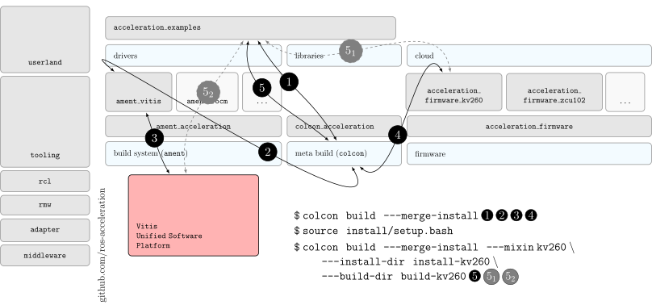

ROS 2-centric¶
ROS is to roboticists what Linux is to most computer scientists and software developers. It helps roboticists build robot applications. With ROS 2, the capabilities to produce robot behaviours become production ready, with the potential to impact many industries. Opposed to reinventing the wheel with new robotics platforms that overload the space with replicas or forks of libraries and/or similar robotics simulators, Xilinx’s approach with KRS meets the ROS robotics community interests and builds on top of ROS 2, together with its tightly connected robotics simulator, Gazebo.

To connect Xilinx’s hardware acceleration technology with the ROS 2 world in a way that encourages package maintainers to benefit from it, Xilinx has created a series of extensions to the ROS 2 build system (ament) and meta build tools (colcon) that minimize the effort required from ROS 2 package maintainers. This architecture is based on three pillars.
Pillar I - Extensions to ament build system¶
The first pillar represents extensions of the ament ROS 2 build system. These CMake extensions help achieve the objective of simplifying the creation of acceleration kernels. By providing an experience and a syntax similar to other ROS 2 libraries targeting CPUs, maintainers will be able to integrate kernels into their packages easily. The ament_acceleration ROS 2 package abstracts the build system extensions from technology-specific frameworks and software platforms. This allows to easily support hardware acceleration across FPGAs and GPUs while using the same syntax, simplifying the work of maintainers. The code listing below provides an example that instructs the CMakeLists.txt file of a ROS 2 package to build a vadd kernel with the corresponding sources and configuration:
acceleration_kernel(
NAME vadd
FILE src/vadd.cpp
INCLUDE
include
TARGET kv260
)
Under the hood, each specialization of ament_acceleration should rely on the corresponding technology libraries to enable it. For example, ament_vitis relies on Vitis Unified Software Platform and on the Xilinx Runtime (XRT) library to generate acceleration kernels and facilitate OpenCL communication between the application code and the kernels. Vitis and XRT are completely hidden from the robotics engineer, simplifying the creation of kernels through simple CMake macros. The same kernel expressed with ament_vitis is presented below:
vitis_acceleration_kernel(
NAME vadd
FILE src/vadd.cpp
CONFIG src/kv260.cfg
INCLUDE
include
TYPE
sw_emu
# hw_emu
# hw
PACKAGE
)
While ament_acceleration CMake macros are preferred and will be encouraged, maintainers are free to choose among the CMake macros available. After all, it’ll be hard to define a generic set of macros that fits all use cases across technologies.
Through ament_acceleration and technology-specific specializations (like ament_vitis), the ROS 2 build system is automatically enhanced to support producing acceleration kernel and related artifacts as part of the build process when invoking colcon build. To facilitate the work of maintainers, this additional functionality is configurable through mixins that can be added to the build step of a ROS 2 workspace, triggering all the hardware acceleration logic only when appropriate (e.g. when --mixin kv260 is appended to the build effort, it’ll trigger the build of kernels targeting the KV260 hardware solution). For a reference implementation of these enhacements, refer to ament_vitis.
Pillar II - Extensions to colcon build tools¶
The second pillar extends the colcon ROS 2 meta built tools to integrate hardware acceleration flows into the ROS 2 CLI tooling and allow to manage it. Examples of these extensions include emulation capabilities to speed-up the development process and/or facilitate it without access to the real hardware, or raw image production tools, which are convenient when packing together acceleration kernels for embedded targets. These extensions are implemented by the colcon_acceleration ROS 2 package. On a preliminary implementation, these extensions are provided the following colcon acceleration subverbs:
colcon acceleration subverbs:
board Report the board supported in the deployed firmware
emulation Manage hardware emulation capabilities
hls Vitis HLS capabilities management extension
hypervisor Configure the Xen hypervisor
linux Configure the Linux kernel
list List supported firmware for hardware acceleration
mkinitramfs Creates compressed cpio initramfs (ramdisks) from raw image
mount Mount raw images
package Packages workspace with kernels for distribution
platform Report the platform enabled in the deployed firmware
select Select an existing firmware and default to it.
umount Umount raw images
v++ Vitis v++ compiler wrapper
version Report version of the tool
Using the list and select subverbs, it’s possible to inspect and configure the different hardware acceleration solutions. The rest of the subverbs allow to manage hardware acceleration artifacts and platforms in a simplified manner.
| verb | quick peek | description |
|---|---|---|
select |
 |
The select verb allows to easily select and configure a specific target firmware for hardware acceleration, and default to it while producing binaries and accelerators. |
list |
|
The list verb allows to inspect the acceleration firmware available in the ROS workspace, marking with a * the currently selected option. |
linux |
 |
The linux verb helps configure the Linux kernel in the raw SD card image produced by the firmware. E.g. colcon acceleration linux vanilla will produce a Linux vanilla kernel, whereas colcon acceleration linux preempt_rt will instead use a pre-built kernel and kernel modules for improved determinism (fully preemptible kernel). |
In turn, the list of subverbs will improve and grow to cover other technology solutions.
Pillar III - a firmware layer for portability¶
The third pillar is firmware. Represented by the abstract acceleration_firmware package, it is meant to provide firmware artifacts for each supported technology so that the kernels can be compiled against them, simplifying the process for consumers and maintainers, and further aligning with the ROS typical development flow.
Each ROS 2 workspace can have one or multiple firmware packages deployed. The selection of the active firmware in the workspace is performed by the colcon acceleration select subverb (pillarII). To get a technology solution aligned with this ROS Enhancement Proposal’s (REP) architecture, each vendor should provide and maintain an acceleration_firmware_<solution> package specialization that delivers the corresponding artifacts in line with its supported categories_ and capabilities_. Firmware artifacts should be deployed at <ros2_workspace_path>/acceleration/firmware/<solution> and be ready to be used by the ROS 2 build system extensions at (pillarI) . For a reference implementation of specialized vendor firmware package, see acceleration_firmware_kv260.
By splitting vendors across packages with a common front-end (acceleration_firmware), consumers and maintainers can easily switch between hardware acceleration solutions and benchmark their kernels across technologies.